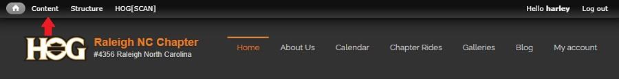
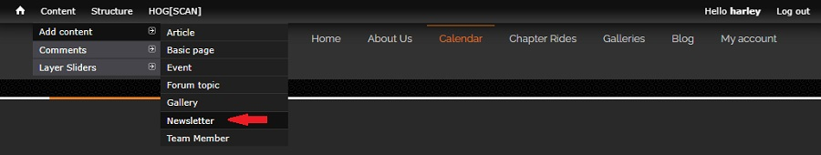
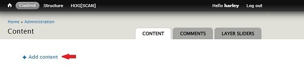
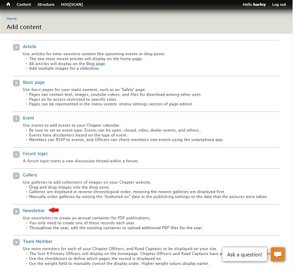
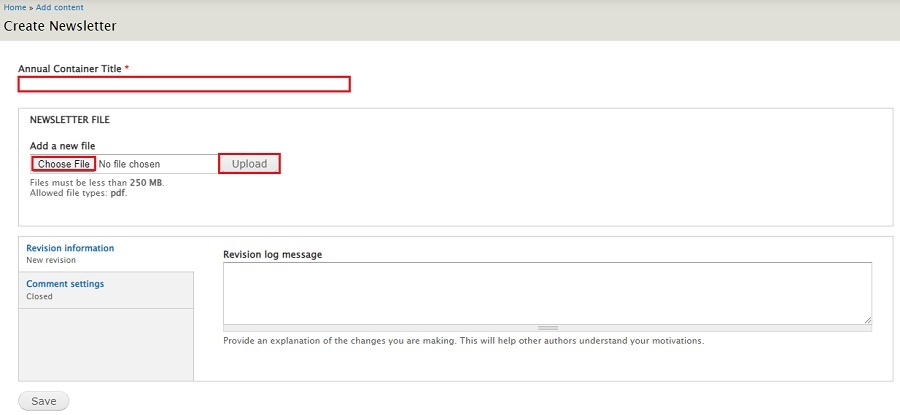
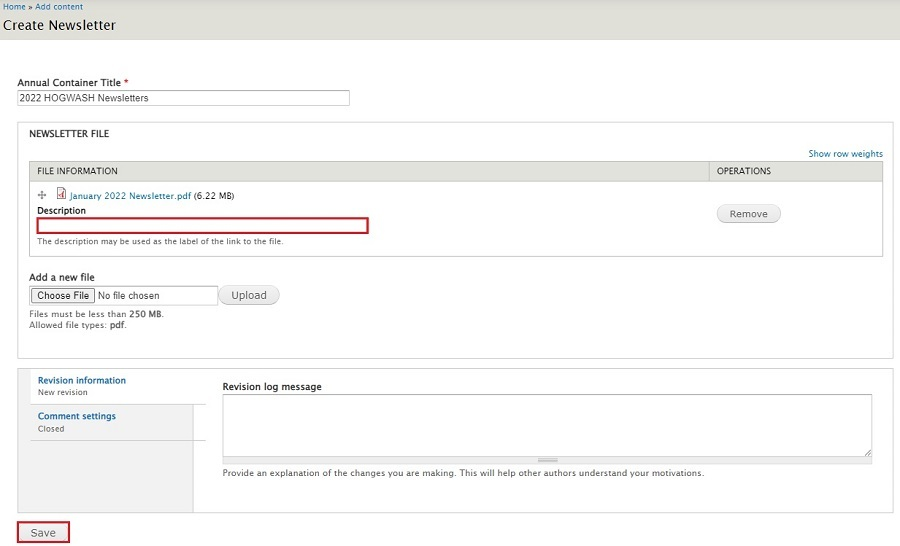

Create Annual Newsletter Container
Steps in this section only need to be done at the start of the calendar year
Once the container has been created and populated with the first newsletter, the remaining newsletters for the calendar year will be added by following the steps in the Upload Monthly Chapter Newsletter section.
- Login to your account on raleighhog.com. You will see a smaller Navigational Bar (navbar) on top of the Chapter navbar. See image below 
- Without clicking, hover the mouse pointer over Content to expand the menu, then hover over Add Content to expand then click Newsletter. See image below 
- Aternately, if you did click on the word Content you will then need to;
- Click on the + Add Content link. See image below 
- Next click Newsletter to open the annual newsletter container. See image below 
- Note: The other pages that you see are beyond the scope of this document. Editing/adding each of them will be covered in other documents.
- The page to create the Annual Newsletter container opens. See image below 
- Fill in the required field, Annual Container Title
- Stay with the naming convention of 20xx HOGWASH Newsletters where 20xx is the new calendar year
- Click the Choose File button and select from your machine the current newsletter.pdf file that you wish to upload
- Click the Upload button
- Once it uploads fill in the Description field. See image below
- Stay with the current naming convention. HOGWASH MMM YYYY (where MMM is the first three letters of the month (e.g. Jan) and YYYY is the four digit calendar year). See image below 
- Optionally, fill in the Revision log message. Something as simple as "create 2022 annual container" is good enough for someone looking later on to see what was done.
- Scroll to the bottom of the page and click the Save button
- You're done. A section for the new calendar year has been created and populated with the Jan edition of the newsletter.